Penumbra
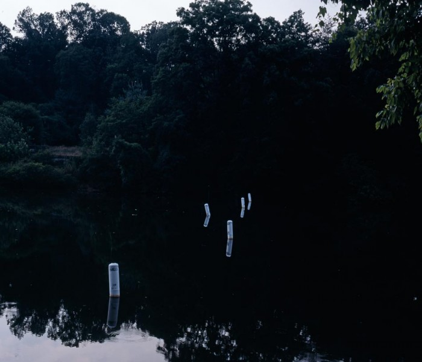
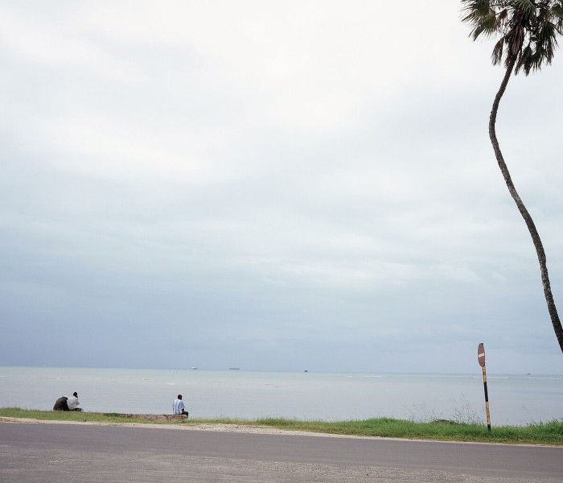
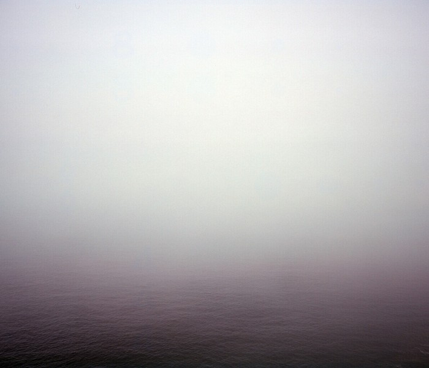
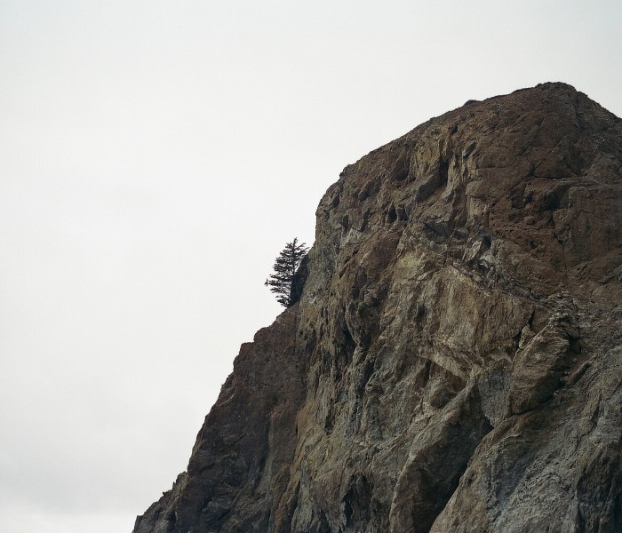
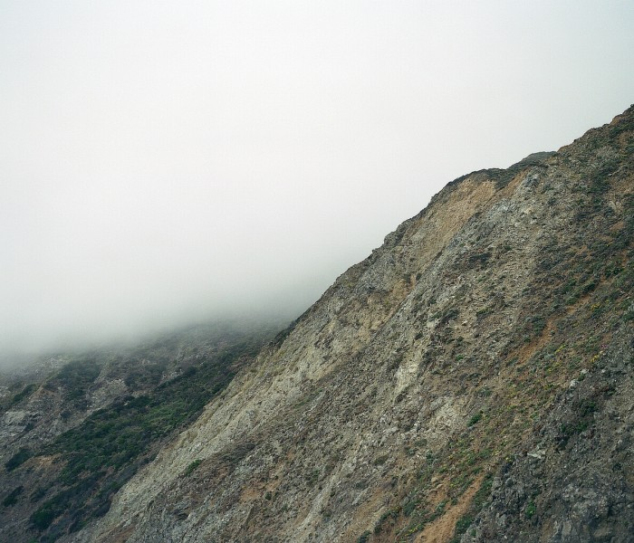
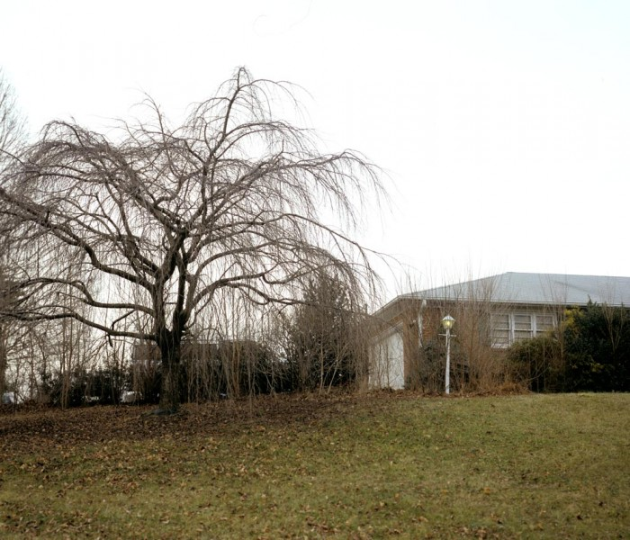
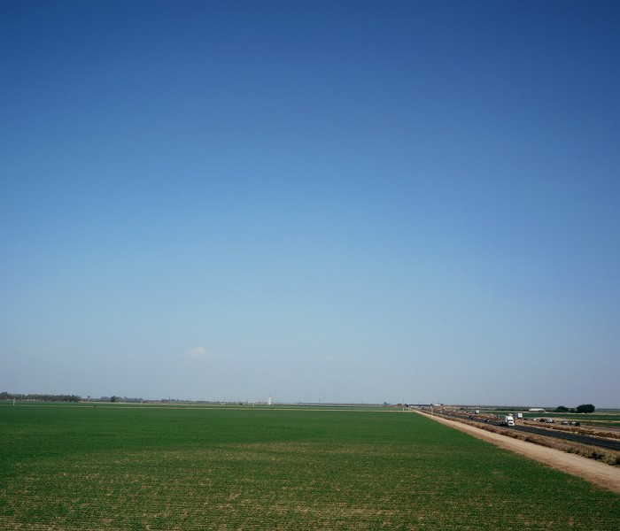
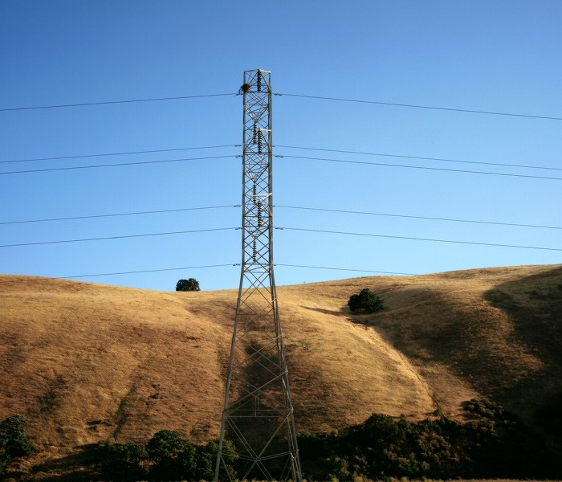
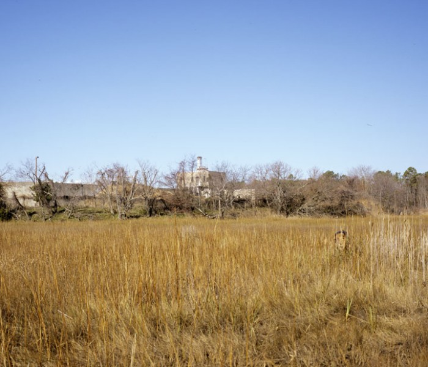
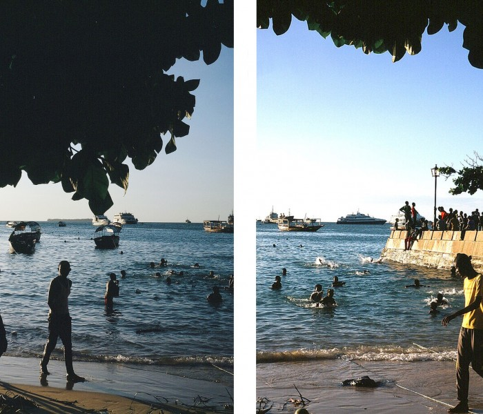
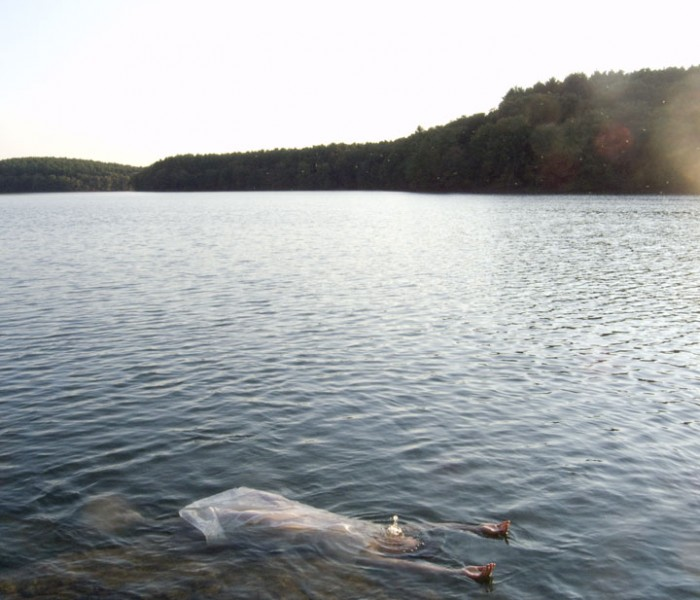
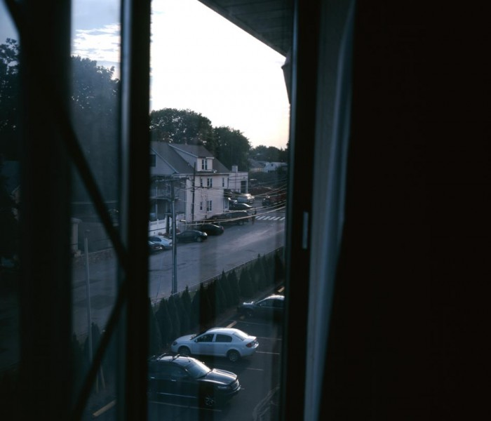
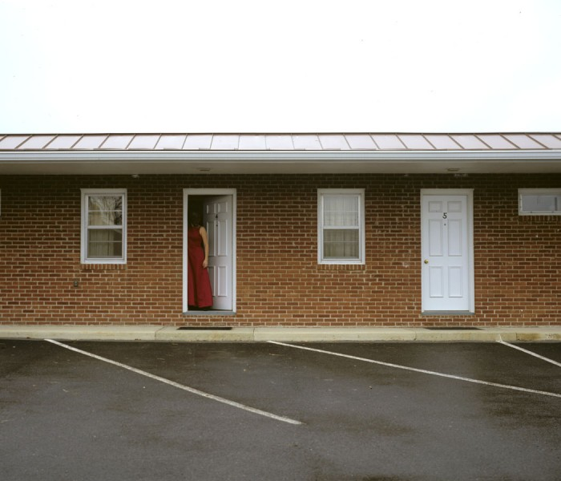
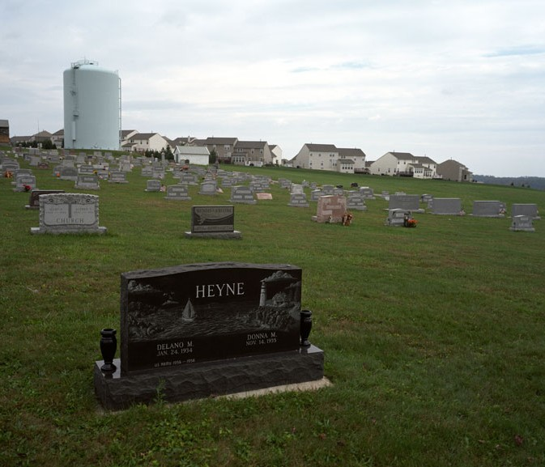
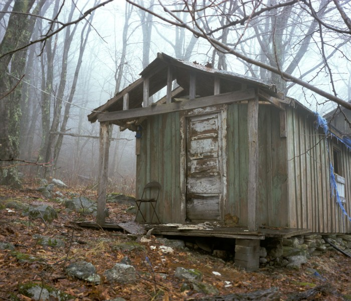
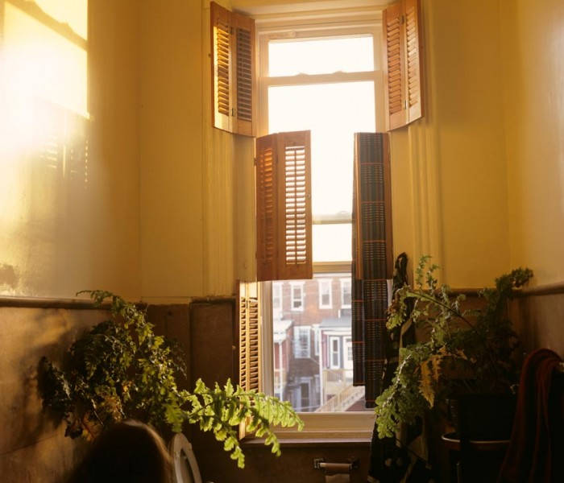
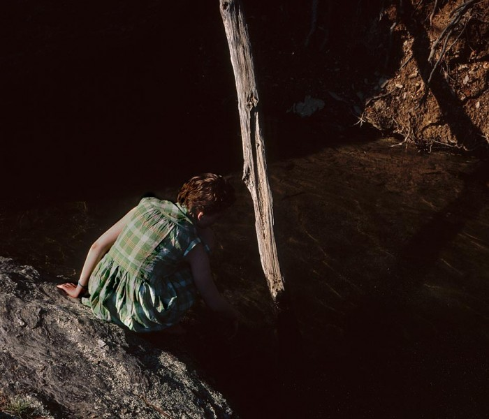
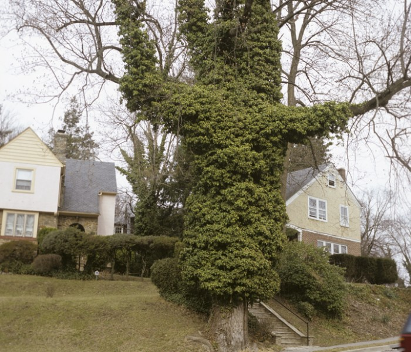
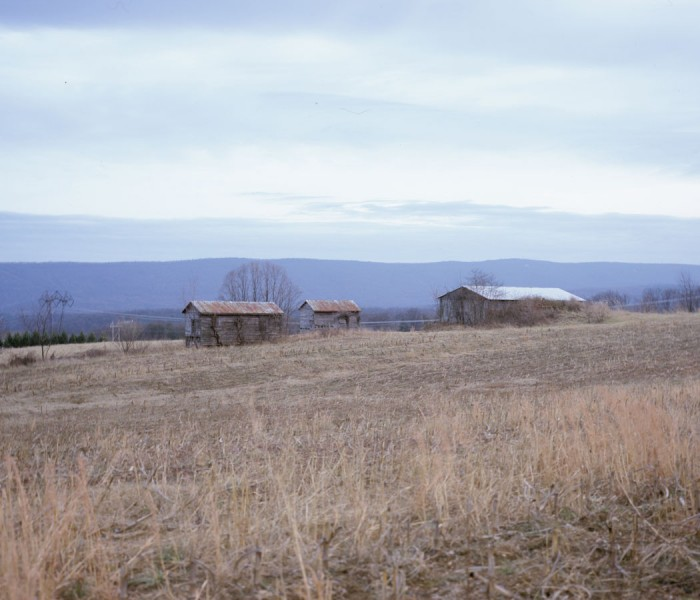
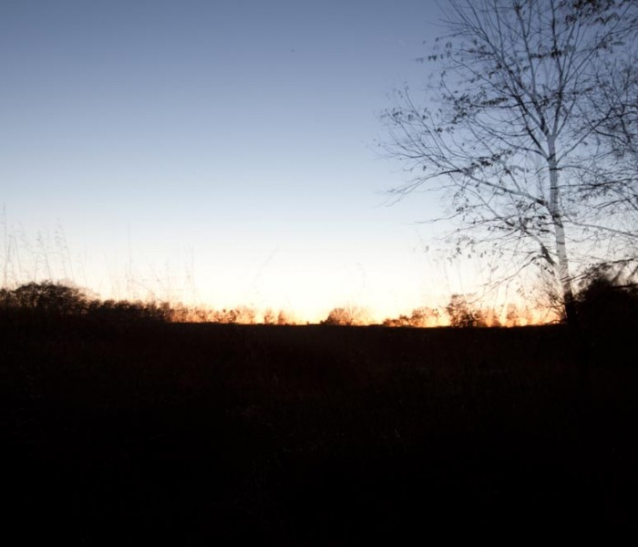
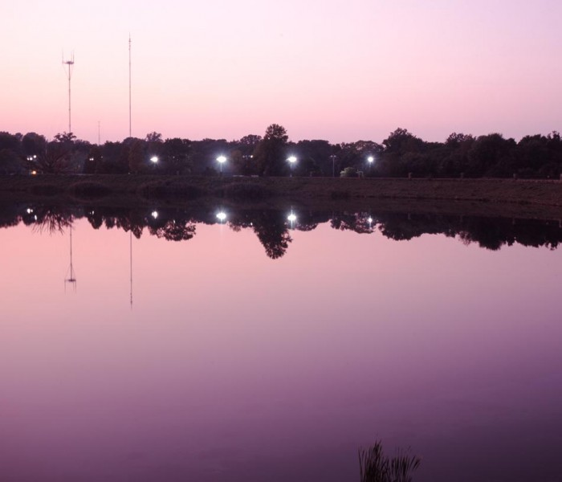
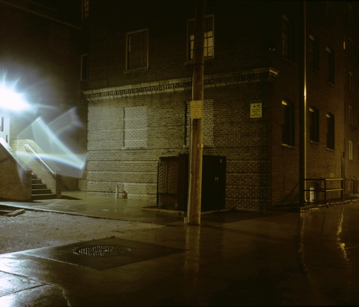
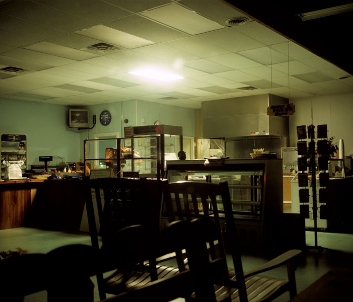
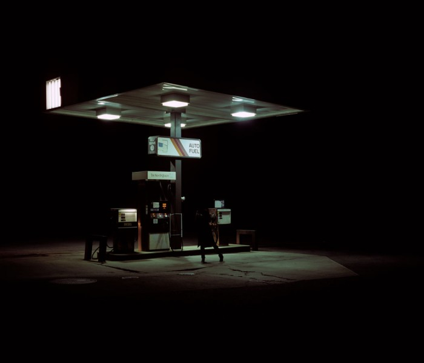
Penumbra literally means the space around a shadow, or the halo that hovers around a glowing object. It is a liminal space, a fiction created by our eyes to reconcile visual incongruence. The pictures make precise reference to the world of fact, the world of the real, and then they distort it. Ever so slightly, lights, figures, juxtapositions, and oddities disobey the conventions that we use to parse reality. In the images, I am blurring the edge between what exists and what does not.